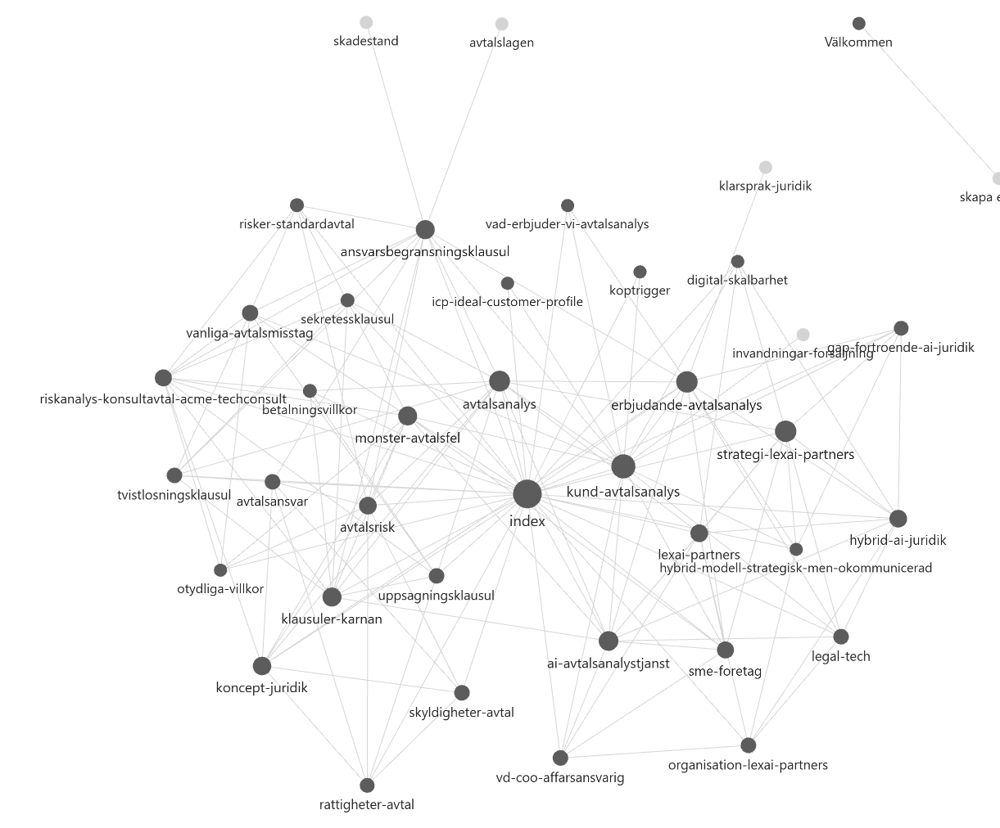

VÅRA TJÄNSTER
AI Info Wiki
Bygg en AI Wiki som gör företagets information sökbar, tillgänglig och användbar genom naturligt språk: klicka på Wiki nedan
AI Knowledge Wiki
Bygg en AI Wiki för företagets processer, SOP:er och metoder så att kunskap kan återanvändas, skalas och överföras: klicka på Wiki nedan
AI Expertis Wiki
Bygg en AI Wiki som bevarar och skalar företagets samlade expertis genom Digitalta DNA/Hjärna – en levande representation av hur företaget tänker, arbetar och fattar beslut: klicka på Wiki nedan
Samla och exponera företagets information. Beskriver: Vad vet vi? (Exempel: AI Advokatfirma)
- Vision
- Mission
- Mål
- Strategi
- Roller
- Ansvar
- Arbetsmodell
- Beslutsstruktur
- Problem
- Transformation
- Tjänst
- Process
- Value proposition
- Pricing
-
ICP
- Persona
- Kundproblem
- Köptrygger
- Invändingar
- Konkurrenter
- Alternativ
- Positionering
- Marknadsdynamik
- Case
- Sales Pitch
- FAQ
- Workshop
- Vanliga invändningar/svar
- Kunddialoger
- Möten transkribering
- Vanliga frågor
- Reviews Feedback
- Sales Data
- Revenue Summary
- Budget
- Cots
- Avtalsklausuler
- Juridiska begrepp
- Praktiska risker & mönster
Dokumentera och standardisera hur ni arbetar med SOP (standard operating procedures). Beskriver: Hur arbetar vi?
🔹 Syfte: Säkerställa att rätt data kommer in
Avtalet tas emot, kontrolleras och förbereds för analys. Systemet säkerställer att dokumentet är i rätt format och innehåller tillräcklig information.
Output
Ett validerat och analysklart avtal
🔹 Syfte: Förstå innehållet i avtalet
AI analyserar avtalet, identifierar klausuler, extraherar relevant information och strukturerar innehållet.
Output
Strukturerad representation av avtalet (klausuler, villkor, innehåll)
🔹 Syfte: Bedöma vad som är risk
Systemet analyserar innehållet utifrån juridiska koncept och mönster för att identifiera och klassificera risker.
Output
Riskbedömning (låg/medel/hög) + identifierade problemområden
🔹 Syfte: Göra analysen användbar
Resultatet presenteras på ett tydligt och begripligt sätt, anpassat för beslutsfattare utan juridisk expertis.
Output
Sammanfattning
Risköversikt
Förklaringar i klarspråk
Beslutsunderlag
Digitalisera företagets expertis och resonemang. Beskriver: Vem är vi? Hur tänker vi?
Precis som mänskligt DNA innehåller de gener som definierar vem du är, utgör det digitala DNA:t de personliga instruktionerna och kontexten för din AI. Detta delas in i fyra kritiska "kromosomer":
- Kunskapskromosomen: Din unika expertis, dina metodologier och dina nyckeldata.
- Stilkromosomen: Tonen i din kommunikation, oavsett om den är formell, nära eller motiverande.
- Värderingskromosomen: De underliggande principerna och budskapen som du alltid vill förmedla i dina interaktioner.
- Målkromosomen: Själva syftet med klonen, vilket styr om den i första hand existerar för att utbilda, sälja eller vägleda användaren.
Här appliceras den kognitiva arkitekturen på din AI, där olika hjärnregioner mappar direkt mot hur vi strukturerar din LLM Wiki och dess instruktioner:
- Prefrontala cortex: Hanterar beslutsfattandet genom workflows och steg-för-steg-instruktioner, det vill säga de SOP:ar vi lagt i din claude.md.
- Temporalloben: Ansvarar för språk och förståelse, vilket representerar språkmodellens (LLM:ens) grundläggande textbearbetning.
- Amygdala: Styr känslor och definierar den emotionella ton som är inprogrammerad i din AI.
- Långtidsminne: Nätverket av kopplingar, vilket i vår arkitektur representeras av din Obsidian-struktur och anpassade databaser eller GPT:er.
- Hippocampus: Korttidsminnet, vilket motsvarar de aktuella promptarna och kontexten i en pågående chattkonversation.
En AI Wiki är företagets digitala minne. Den omvandlar information till kunskap och kunskap till expertis genom att samla företagets information, processer och erfarenheter i ett intelligent system som människor och AI kan använda tillsammans.

EXEMPEL PÅ FRÅGOR SOM WIKI KAN HANTERA
Vi är ett SaaS-bolag med 25 anställda. Vi har fått ett leverantörsavtal från en större aktör som vi ska använda i vår plattform. De vill att vi signerar inom 24 timmar. Detta är ganska viktigt eftersom det påverkar vår leverans till kund. Jag vill veta:
- vad vi måste granska först
- vilka risker som kan kosta oss pengar
Vi är ett konsultbolag som ska leverera ett integrationsprojekt till en kund. I avtalet står att vi är fullt ansvariga för alla förseningar, oavsett orsak. Detta projekt är viktigt för oss, både ekonomiskt och för vår relation med kunden. Vi funderar på att acceptera detta för att vinna affären. Kan vi gå med på detta, och vad är risken om vi gör det?
Vi är ett konsultbolag som använder samma avtalsmall för alla våra uppdrag. Den har fungerat hittills och vi har inte haft några större problem. Vi använder den för IT- och integrationsprojekt. Vi vill förstå:
- vilka risker vi inte ser
- om något saknas eller är otydligt
Vi är ett konsultbolag som levererat ett projekt till en kund. Kunden har inte betalat fakturan och är nu 60 dagar sen. De svarar inte på mejl. Vi vill förstå:
- vad vi har rätt att göra enligt avtalet
- hur stark vår position är
- vad vi borde göra nu
Många har föutfattade meningar om AI och kan komma med invändningar som: "AI kan inte förstå juridik korrekt" Vilka konkreta, belagda argument kan LexAI Partners använda för att motbevisa den — och hur starkt stöd finns för varje argument i de sju dokumenten tillsammans?
AI gav detta svar. Ladda ner dokumentet:
Ladda ner PDFSAMMANFATTNING
Denna advokatbyrå kan redan idag besvara avancerade juridiska frågor med hjälp av AI Info Wiki. Genom att komplettera AI Knowledge Wiki och AI Expertise Wiki kan systemet dessutom förstå företagets arbetssätt, expertis och resonemang – och därmed leverera ännu mer träffsäkra och värdefulla svar.